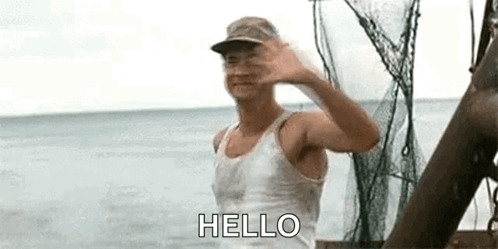

Inicio
¡Hola! Bienvenido a mi portfolio

El Blog
Este blog era algo que tenía pendiente, y que ha comenzado sus andanzas tras el requerimiento de la asignatura "Lenguajes de marcas y sistemas de Gestión de la información" del grado de ASIR. Se ordena en 2 grandes bloques, el proyecto de Lenguajes de Marcas y Gestión de la Información, y Homelab, dentro de cada proyecto se organiza por sub-proyectos.
Siento gran curiosidad por los sistemas de clústeres y la alta disponibilidad, a su vez soy consciente de mi edad y de lo valioso como recurso que puede ser tener todo bien documentado. Sumando todo tenemos este proyecto. Quiero manifestar mi intención de hacer de este sitio web un escaparate, en el que mostrar mis aptitudes, el tono que busco es técnicamente correcto, pero me niego a dar un tono aséptico y quirúrgico porque yo mismo me aburriría redactándolo. Aunque siendo este un portfolio es importante mostrar que soy capaz de redactar informes de IT , por lo que cada entrada del blog, irá acompañada de un informe.
Estimado lector, siéntase libre de comentar y criticar, pero no se olvide de que este es un proyecto personal, y que no soy un profesional de la comunicación. Nah en serio, ten en cuenta que este proyecto está en su tercera semana de vida y que irá evolucionando según aprenda más sobre la asignatura que ha "forzado" su creación.
Entradas Recientes
Solo se enlaza la entrada más reciente de cada serie; el listado completo está en el índice de entradas.